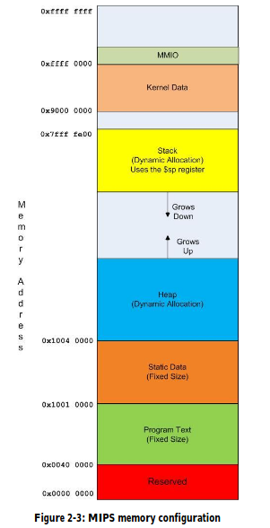

Chapter 2
MIPS Registers
| Mnemonic |
Number |
Description |
| $zero |
$0 |
Zero constant (value always 0) |
| $at |
$1 |
Reserved assembler reg |
| $v0,$v1 |
$2,$3 |
subprogram return values; $v0 is input to 'syscall' |
| $a0,...$a3 |
$4,...$7 |
Arguments to subprograms |
| $t0,...$t9 |
$8,...$15, $24,$25 |
Temporary Variables |
| $s0,...$s8 |
$16,...$24 |
Save Values; values maintained across different subprogram calls |
| $k0,$k1 |
$26,$27 |
Reserved for the OS |
| $gp |
$28 |
Pointer to global mem; used with heap allocations |
| $sp |
$29 |
Stack Pointer |
| $fp |
$30 |
Frame pointer; maintains info about stack |
| $ra |
$31 |
Returns address; pointer to address to use when returning
from a subprogram
|
Memory Types
| Name | Description |
|---|
| Static |
Stored in the data segment; size set at compile time and fixed,
size cannot change
|
| Heap |
Dynamic run time memory e.g. new operator |
| Stack |
Dynamic data for subprograms via push,pop; Method
local vars stored here
|

Hello World Program
# Hello World Program
.text
main:
li $v0, 4 # 4 = print syscall
la $a0, greeting # load address of greeting into argument for syscall (print)
syscall
li $v0, 10 # 10 = exit syscall
syscall
.data
greeting: .asciiz "Hello World!" # define null terminated string
User Input Program
# read an int and string as input from the user
.text
main:
# print out the prompt
li $v0,4
la $a0,prompt
syscall
# Get user input, store in s0
li $v0, 5
syscall
move $s0, $v0
# Print out the result
li $v0, 1 # 1 = print int from a0
move $a0, $s0
syscall
# prompt user for string input
li $v0, 4
la $a0, stringprompt
syscall
# Get user string input
li $v0, 8
la $a0, input
lw $a1, inputsize
syscall
# print out the users input
li $v0, 4
la $a0, input
syscall
# exit
li $v0, 10
syscall
.data
input: .space 81
inputsize: .word 80
prompt: .asciiz "Enter an Integer:"
stringprompt: .asciiz "Enter a string:"